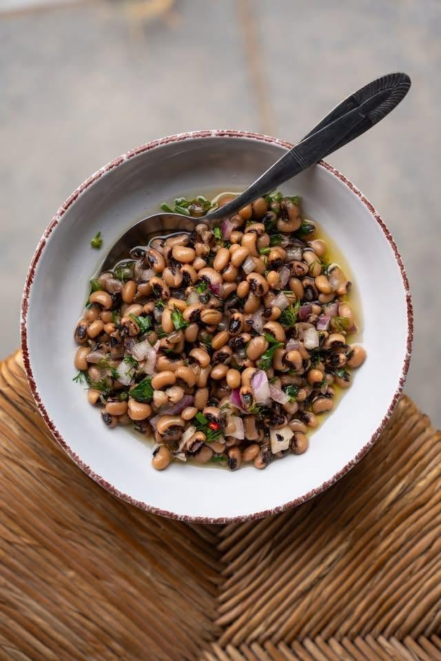
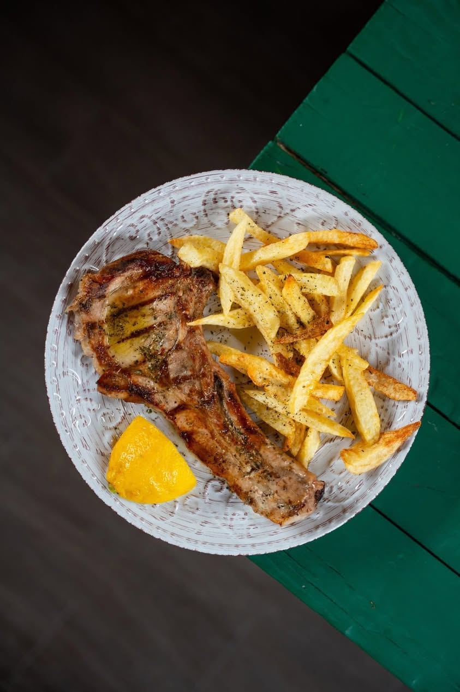
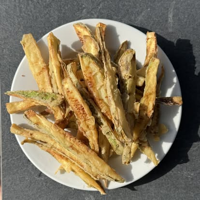
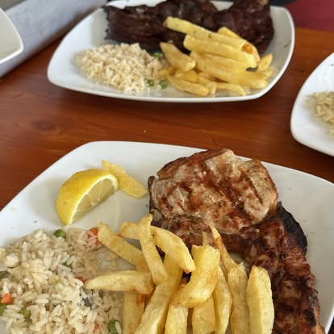

Σπιτικό φαγητό, κρέατα στα κάρβουνα και τραπέζια στον κήπο — μια αυθεντική γεύση της Μεσσηνίας, λίγο βόρεια από τα resorts. A family-run traditional Greek taverna near Costa Navarino — honest home cooking, chargrilled meats and garden tables.
Ψάχνετε αυθεντική ελληνική ταβέρνα κοντά στην Costa Navarino; Ο «Σταθμός Αγιαννάκη» είναι μια οικογενειακή ταβέρνα στον Αγιαννάκη Κυπαρισσίας, περίπου 50 λεπτά βόρεια από τα resorts, δίπλα στις παραλίες της Μεσσηνίας.
Σερβίρουμε κλασικό ελληνικό σπιτικό φαγητό: χοιρινή μπριζόλα και πανσέτα στα κάρβουνα, φρέσκια χωριάτικη, μαγειρευτά της ημέρας, τηγανητές μελιτζάνες και χειροποίητες πατάτες, με ντόπιο λάδι και τίμιες τιμές. Τραπέζια στον κήπο, άνετο parking και ζεστή φιλοξενία — εδώ έρχονται ντόπιοι και επισκέπτες, κι επιστρέφουν.
Looking for a traditional Greek taverna near Costa Navarino? Σταθμός Αγιαννάκη is a family-run taverna in the village of Agiannakis, about a 50-minute drive north of the Costa Navarino resorts and close to Kyparissia and the Messinian beaches. We serve classic Greek home cooking — chargrilled pork chops, fresh Greek salad, slow-cooked dishes of the day, hand-cut fries and local olive oil — at honest prices, with a garden, parking and a warm welcome. Open daily 12:00–23:45.

Πατήστε σε μια φωτογραφία για να τη δείτε μεγαλύτερη.Tap a photo to view it larger.



Στον Αγιαννάκη Κυπαρισσίας, με άνετο parking.In Agiannakis, Kyparissia — easy parking, an easy drive from Costa Navarino.